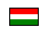
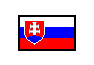
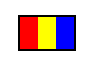
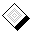
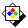
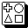
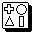

|
|
 Egy lerakott lap jelentése nem biztos, hogy érvényesül: ha a lap színe tulajdonságú, akkor vétójoggal
rendelkeznek azok a játékosok, akiknek ezzel (színben és jelzésben) megegyezõ lapjuk van (vagy azzá váló metaszínû / -jelzésû).
Ha közülük valaki bedobja az említett lapot, azzal érvényteleníti az elõzõt. A vétózó játékostól folytatódik a játék, hasonlóan a beszúráshoz.
Csak a
Egy lerakott lap jelentése nem biztos, hogy érvényesül: ha a lap színe tulajdonságú, akkor vétójoggal
rendelkeznek azok a játékosok, akiknek ezzel (színben és jelzésben) megegyezõ lapjuk van (vagy azzá váló metaszínû / -jelzésû).
Ha közülük valaki bedobja az említett lapot, azzal érvényteleníti az elõzõt. A vétózó játékostól folytatódik a játék, hasonlóan a beszúráshoz.
Csak a  szín rendelkezik ezzel a tulajdonsággal. szín rendelkezik ezzel a tulajdonsággal.
A  jelzéstulajdonság csak úgy érvényesül, amennyiben a kártya színe tulajdonságú.
Egy olyan lap, mely mindkettõvel rendelkezik,
többször is vétózható: nem hatástalanítódik, hanem mindig a legutoljára vétózó játékos számára érvényesül.
A tulajdonsággal az alábbi jelzések rendelkeznek (a többi csak egyszer vétózható): jelzéstulajdonság csak úgy érvényesül, amennyiben a kártya színe tulajdonságú.
Egy olyan lap, mely mindkettõvel rendelkezik,
többször is vétózható: nem hatástalanítódik, hanem mindig a legutoljára vétózó játékos számára érvényesül.
A tulajdonsággal az alábbi jelzések rendelkeznek (a többi csak egyszer vétózható):
Turistajelzések, Turistické znaèky , Marcaje turistice,
, , ,
, , , , ,  . .
Kimaradás / kötelezõ húzás halmozása közbeni vétózás
a teljes halmazatot (s így magát a kimaradást is) hatástalanítja.
Nyilvánvaló, hogy   -lel
bármilyen vétózható lap megvétózható, hiszen hasonul hozzá színben
és jelzésben. -lel
bármilyen vétózható lap megvétózható, hiszen hasonul hozzá színben
és jelzésben.
|
|

 Bevezetõ |
Bevezetõ |
 Szabályok |
Szabályok |
 Súgó |
Súgó |
 Paklik
Paklik